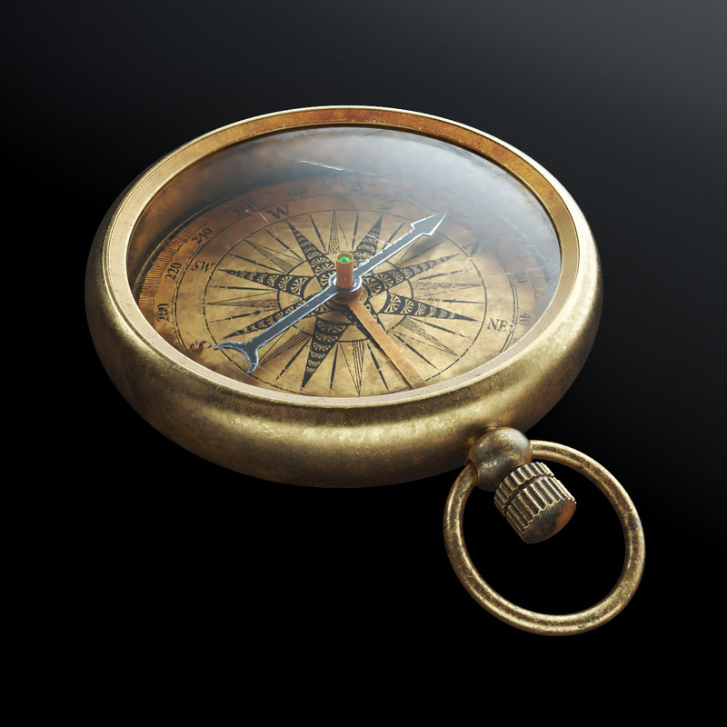
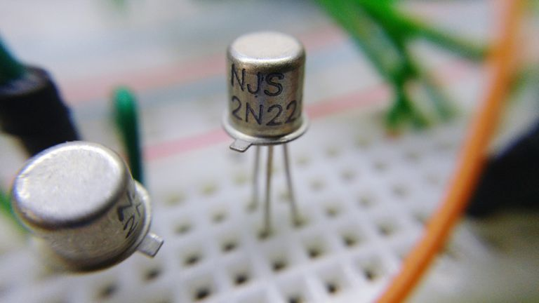
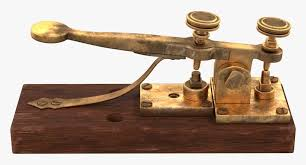

History of Technology
In the beginning of 1800s, when industrial change began in Europe and the United States, and moving forward into the 21st century. Although it is difficult to know which recent technologies will be considered important down the road, we will look at what the experts consider to be the seminal technologies of the past few years.
One of the things that may strike you as you read through this material is how early many inventions appeared. Things we assume are 20th century inventions for examples, the fax machine were actually developed in the 19th century. However, in many cases we needed to wait for the widespread use of electricity to take full advantage of the inventions, and that did not occur until the 20th century.
Technological Innovation That Changed History
- The Printing Press

Prior to the rise of the Internet, no innovation did more for the spread and democratization of knowledge than Johannes Gutenberg’s printing press. Developed around 1440 in Mainz, Germany, Gutenberg’s machine improved on already existing presses through the use of a mould that allowed for the rapid production of lead alloy type pieces. This assembly line method of copying books enabled a single printing press to create as many as 3,600 pages per day. By 1500 over 1,000 Gutenberg presses were operating in Europe, and by 1600 they had created over 200 million new books. The printing press not only made books affordable for the lower classes, but it helped spark the Age of Enlightenment and facilitated the spread of new and often controversial ideas. In 1518 followers of the German monk Martin Luther used the printing press to copy and disseminate his seminal work “The Ninety-Five Theses,” which jumpstarted the Protestant Reformation and spurred conflicts like the Thirty Years’ War (1618-48). The printing press proved so influential in prompting revolutions, religious upheaval and scientific thought that Mark Twain would later write, “What the world is today, good and bad, it owes to Gutenberg.”
- The Compass 
Magnetic compasses may have been made somewhat obsolete by satellites and global positioning systems, but their impact on early navigation and exploration was inestimable. Originally invented in China, by the 14th century compasses had widely replaced astronomical means as the primary navigational instrument for mariners. The compass provided explorers with a reliable method for traversing the world’s oceans, a breakthrough that ignited the Age of Discovery and won Europe the wealth and power that later fueled the Industrial Revolution. Most importantly, the compass allowed for interaction—both peaceful and otherwise—between previously isolated world cultures.
- Paper Currency

Throughout much of human history, money took the form of precious metals, coins and even raw materials like livestock or vegetables. The inception of paper money ushered in a bold new era—a world in which currency could purchase goods and services despite having no intrinsic value. Paper currency was widely used in China in the ninth century, but did not appear in Europe until the late 1600s. Spurred on by frequent shortages of coins, banks issued paper notes as a promise against future payments of precious metals. By the late 19th century many nations had begun issuing government-backed legal tender that could no longer be converted into gold or silver. The switch to paper money not only bailed out struggling governments during times of crisis—as it did for the United States during the Civil War—but it also ushered in a new era of international monetary regulation that changed the face of global economics. Perhaps even more importantly, paper currency was the vital first step in a new monetary system that led to the birth of credit cards and electronic banking.
- Transistors 
A criminally underappreciated innovation, the transistor is an essential component in nearly every modern electronic gadget. First developed in late 1947 by Bell Laboratories, these tiny semiconductor devices allow for precise control of the amount and flow of current through circuit boards. Originally used in radios, transistors have since become an elemental piece of the circuitry in countless electronic devices including televisions, cell phones and computers. The amount of transistors in integrated circuits doubles nearly every two years—a phenomenon known as Moore’s Law—so their remarkable impact on technology will only continue to grow.
- Antibiotics
giant step forward in the field of medicine, antibiotics saved millions of lives by killing and preventing the growth of harmful bacteria. Scientists like Louis Pasteur and Joseph Lister were the first to recognize and attempt to combat bacteria, but it was Alexander Fleming who made the first leap in antibiotics when he accidentally discovered the bacteria-inhibiting mold known as penicillin in 1928. Antibiotics proved to be a major improvement on antiseptics—which killed human cells along with bacteria—and their use spread rapidly throughout the 20th century. Nowhere was their effect more apparent than on the battlefield: While nearly 20 percent of soldiers who contracted bacterial pneumonia died in World War I, with antibiotics—namely Penicillin—that number dropped to only 1 percent during World War II. Antibiotics including penicillin, vancomycin, cephalosporin and streptomycin have gone on to fight nearly every known form of infection, including influenza, malaria, meningitis, tuberculosis and most sexually transmitted diseases.
- The Telegraph 
The telegraph was the first in a long line of communications breakthroughs that later included radio, telephones and email. Pioneered by a variety of inventors in the 18th and 19th centuries, the telegraph used Samuel Morse’s famous Morse code to convey messages by intermittently stopping the flow of electricity along communications wires. Telegraph lines multiplied throughout the 1850s, and by 1902 transoceanic cables encircled the globe. The original telegraph and its wireless successors went on to be the first major advancements in worldwide communication. The ability to send messages rapidly across great distances made an indelible impact on government, trade, banking, industry, warfare and news media, and formed the bedrock of the information age.